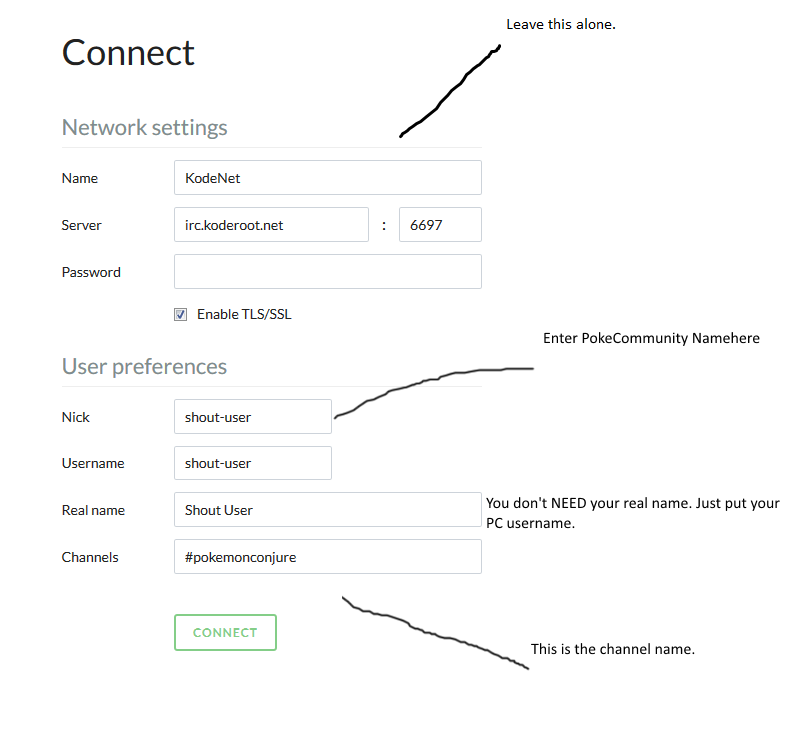

Pokémon Conjure IRC
Latest update: June 28th 2016
Introduction
Pokémon Conjure actually has an IRC, which is mostly used for development, but can be used to just chat about the game. The website for the IRC is located here.
How to get on
It's fairly easy to get on the IRC. Our channel is #pokemonconjure and there is an image below for convenience. This is what you will see when you go to the website.